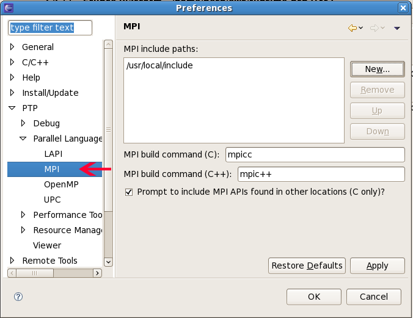

To use the PTP Parallel Language Development Tools feature for MPI development, you need to
To specify the MPI include path, use Window > Preferences. Under PTP, Parallel Language Development Tools, MPI... (Note: If you do not have core PTP installed, the "Parallel Language Development Tools" section in the preferences will be included without it.)
Add the path to MPI include paths - this tells PLDT what symbols to look
for in the MPI Artifact view. You can also specify the default MPI build command.
These values will make the MPI New Project Wizard page make more
accurate predictions of settings for new projects.

The MPI include paths must also be added to each project. There are two ways to do this.
Create a new "Managed Make C Project." After the "Additional Project settings" wizard page, you should see the "MPI Project Settings" wizard page.
(Note: we plan to add a "New MPI project" project type later.)
If you have configured the Preferences as described above, the MPI include paths and other settings should be automatically included. To not include the settings in the build configuration, uncheck the first box "Add MPI project settings to this project". If you want MPI settings but the settings for this project should be different, uncheck the "Use default information" and correct the information.
If the new project wizard isn't used as described above to set the MPI information for a project, the MPI information can be added to the project manually as follows.

Project Properties, C/C++ Build, Configuration Settings, Tool Settings tab, GCC C Linker, Libraries

Now set up to run the MPI plug-in